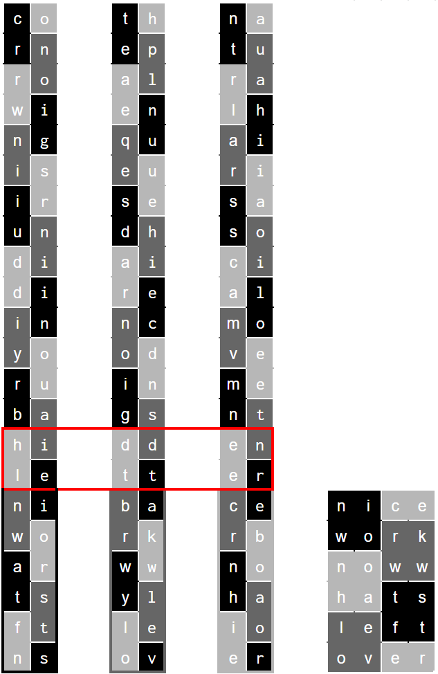

Solution: National Museum of African American History and Culture
Answer: BARBARYLIONS
Written by Dawson Do
To begin this puzzle, you must continue the braiding pattern that was started. The parts of the braids that were already completed read out to say: DID YOU KNOW. After you finish braiding, each triplet provides a fact that can be read from row 1 to row 14.
- Cornrowing is Irun Didi in Yoruba
- The Palenque used hair encodings
- Natural hair is a social movement
However, these facts end with unintelligible letters. Reading across all three braids reveals that the following two rows (15 and 16) say: HIDDEN LETTER. Indeed, when you braid, you covered a letter on every row. Reading these letters give the direction: ONCE YOU HAVE FINISHED BRAIDING DO IT AGAIN START WITH ROW SEVENTEEN SAME ORDER

Braiding together each braid, using the same sequence as each sub-braid, reveals the phrase: NICE WORK NOW WHAT’S LEFT OVER. Reading out the remaining letters gives the answer: BARBARY LIONS
Author’s Notes
This is one of my favorite puzzles I wrote for the event, and I hope everyone was able to learn a few things while solving it. I highly recommend Emma Dabiri’s book; I pulled the facts from there and it was difficult to choose only three.